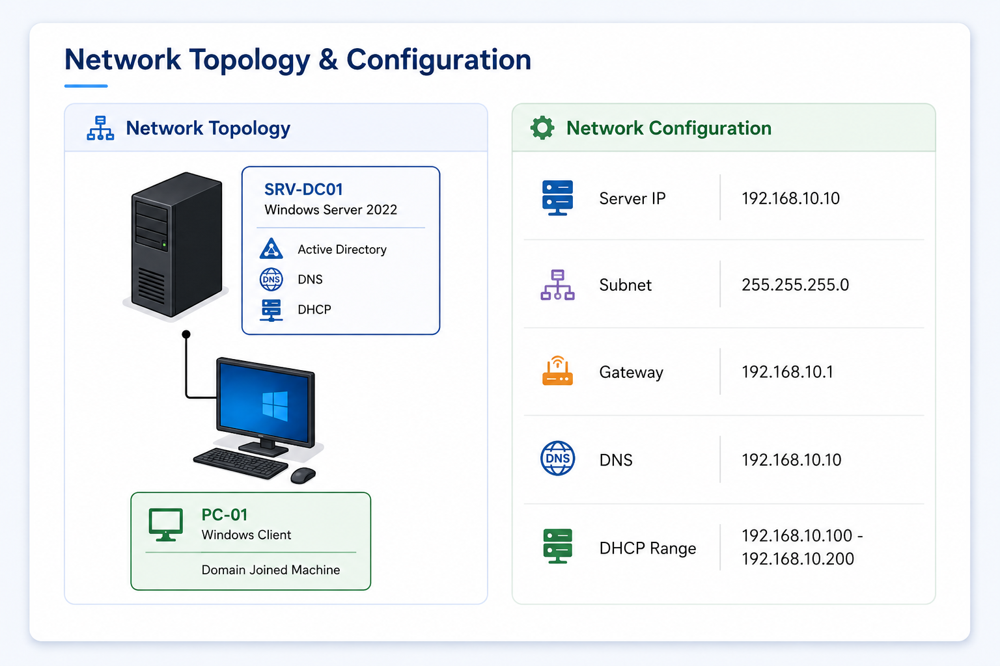

Windows Server AD Lab Foundation
Active Directory • DNS • DHCP • Hyper-V • Enterprise Networking

Description
- This project demonstrates the setup of a Windows Server 2025 Home Lab that simulates a small enterprise network environment.
- The lab includes Active Directory, DNS, DHCP, and Windows client machines joined to the domain.
- The objective of this project is to develop hands-on skills in Windows Server administration, enterprise networking, and troubleshooting.
Objectives
Technology Used
Network Topology & Configuration
This section shows the network topology and IP configuration used in the Windows Server Home Lab environment.

Implementation
Create Virtual Machines
Two virtual machines were created to simulate a small enterprise environment.

SRV-DC01
Windows Server 2025 Domain Controller.

PC-01
Windows 10/11 PC Clients Virtual Machines
Install Windows Server 2025
- Windows Server 2025 was installed on the SRV-DC01 virtual machine.
- The server hostname was renamed to SRV-DC01.
Post-Installation Tasks
Configure Computer Name

The server hostname was renamed to SRV-DC01.
Set Static IP Address

A static IP address was configured for reliable communication.
Configure Time Zone

The server time zone was configured for proper synchronization.
Enable Remote Desktop

Remote Desktop was enabled for remote administration.
Run Windows Updates

Windows updates were installed to improve stability and security.
Deploy Active Directory Domain Services (AD DS) and DNS
- Active Directory Domain Services (AD DS) was installed and configured.
- DNS Server was automatically installed during domain controller promotion.
- Domain Name: csenterprise.local
Active Directory Administration Tasks
After deploying Active Directory Domain Services (AD DS), several administrative tasks were performed to manage users, groups, permissions, organizational units, and security policies within the domain environment.
Create User Account

A new domain user account was created in Active Directory Users and Computers.
Reset User Password

User account passwords can be reset by administrators when needed.
Unlock User Account

Locked user accounts were unlocked to restore domain access.
Disable or Delete Account

User accounts can be disabled or removed when no longer required.
Create Security Group

Security groups were created to organize users and simplify permission management.
Add User to Group

Users were added to security groups to apply shared permissions and access control.
Assign Permissions

Folder and resource permissions were assigned based on group membership.
Manage Organizational Units

Organizational Units (OUs) were created and managed to organize domain objects.
Password Policy

Password policies were configured to improve domain security.
Account Lockout Policy

Account lockout settings were configured to protect against unauthorized login attempts.
Deploy DHCP Server
- The DHCP Server role was installed and configured to automatically assign IP addresses to client devices on the network.
- A DHCP scope was created and authorized to provide IP address leasing services within the domain environment.
Join PC to DHCP

The client computer was configured to automatically obtain an IP address from the DHCP Server.
Connectivity Test

Network connectivity was tested successfully between the client device and the server environment.
Join PC to Domain & Test Connectivity
Join Computer to Domain

The client PC was successfully joined to the Active Directory domain.
Test Domain Login

Domain authentication was successfully verified.
Connectivity Test

Network communication and DNS resolution were tested.
Common Troubleshooting Issues
This section demonstrates common Windows Server, Active Directory, DNS, DHCP, and networking issues encountered during the Windows Server Home Lab project, including investigation procedures and resolution steps.
Trust Relationship Between Workstation and Domain Failed
“The trust relationship between this workstation and the primary domain failed.”

Probable Cause
- Computer account password mismatch between the workstation and the Domain Controller
- Commonly caused by restoring VM checkpoints, inactive machines, or Active Directory synchronization issues
Investigation
- Verified network connectivity between the workstation and the Domain Controller
- Tested DNS resolution and confirmed the client could locate the Domain Controller
- Reviewed the computer account status in Active Directory Users and Computers (ADUC)
- Verified date and time synchronization between the workstation and Domain Controller
- Attempted domain login to reproduce the trust relationship error
Resolution Steps
- Logged in using the local administrator account
- Removed the workstation from the domain
- Joined the workstation to a temporary workgroup
- Restarted the workstation
- Rejoined the workstation to the Active Directory domain
- Restarted the workstation again
- Verified successful domain authentication and login

The RPC Server Is Unavailable
“The RPC server is unavailable.”

Probale Cause
- RPC-related services are stopped or unreachable
- Incorrect DNS configuration or blocked network communication between systems
- Windows Firewall is blocking RPC traffic
Investigation
- Tested network communication between the client and server
- Verified DNS name resolution using nslookup
- Checked Windows Firewall settings
- Verified required RPC-related services were running
- Tested connectivity using ping command
- Checked remote management connectivity between systems
Resolution Steps
- Started required RPC-related services
- Allowed RPC traffic through Windows Firewall
- Verified correct DNS server configuration
- Restarted affected systems
- Retested remote communication successfully

Disabled User Account
“Your account has been disabled. Please see your system administrator.”

Probable Cause
- User account was manually disabled in Active Directory Users and Computers (ADUC)
- Account may have been disabled due to security policy or administrative action
Investigation
- Verified the user account status in Active Directory Users and Computers (ADUC)
- Confirmed the account was disabled
- Reviewed account properties and group membership
- Verified domain connectivity and authentication services were functioning properly
- Tested login using another domain account to isolate the issue
Resolution Steps
- Re-enabled the disabled user account in Active Directory
- Verified the account was unlocked and enabled successfully
- Confirmed correct group membership and permissions
- Retested domain login successfully


Expired User Account
“The user's account has expired.”

Probable Cause
- User account expiration date has been reached in Active Directory
- Account expiration settings were configured for temporary or limited user access
Investigation
- Checked the user account expiration settings in Active Directory Users and Computers (ADUC)
- Verified the configured account expiration date
- Confirmed the account had already expired
- Tested login using another domain account to isolate the issue
- Verified domain authentication services were functioning properly
Resolution Steps
- Removed or updated the account expiration date in Active Directory
- Applied the updated account settings
- Retested domain login successfully
- Confirmed the user account authenticated normally


Client Receives an APIPA Address
Client receives an APIPA address (169.254.x.x) instead of a DHCP IP.

Probable Cause
- Client failed to contact the DHCP Server
- DHCP service is stopped, unreachable, or scope is unavailable
- Network adapter is not configured to obtain an IP address automatically
Investigation
- Verified DHCP Server service status
- Checked DHCP scope activation and IP address availability
- Verified the client network adapter was configured to obtain an IP address automatically
- Tested physical and virtual network connectivity
- Checked client IP configuration using ipconfig
- Attempted DHCP lease renewal using ipconfig /renew
Resolution Steps
- Started or restarted the DHCP Server service
- Verified DHCP scope was active and had available IP addresses
- Configured the client to obtain an IP address automatically
- Renewed the client IP address successfully
- Confirmed the client received a valid DHCP IP address

No Internet Connection
“No Internet Access”

Probable Cause
- Incorrect default gateway or DNS server configuration
- DHCP configuration issue or network connectivity problem
Investigation
- Checked IP address, subnet mask, default gateway, and DNS settings
- Tested network connectivity using ping commands
- Verified the client received valid network settings from DHCP
- Tested internet connectivity from another device
- Verified physical and virtual network connectivity
Resolution Steps
- Corrected default gateway and DNS server configuration
- Renewed the client IP configuration
- Restarted the network adapter
- Retested internet connectivity successfully
Duplicate Computer Name
“A duplicate name exists on the network.”

Probable Cause
- Another workstation is already using the same computer name on the network
- Duplicate computer object exists in Active Directory
Investigation
- Checked the computer name configured on the client workstation
- Verified another device was already using the same hostname
- Reviewed Active Directory computer objects for duplicate entries
- Confirmed the issue occurred during domain join or network communication
Resolution Steps
- Renamed the workstation with a unique computer name
- Restarted the workstation after renaming
- Retested domain communication successfully
- Confirmed the workstation connected to the domain without errors

DNS Server Not Responding
“DNS server not responding.”

Probable Cause
- DNS Server service is stopped or not running on the Domain Controller
- Client systems cannot communicate with the DNS Server
Investigation
- Checked DNS Server service status on the Domain Controller
- Verified the DNS service was not running
- Tested DNS resolution using nslookup from the client workstation
- Confirmed DNS queries were failing
- Verified network connectivity between the client and server
Resolution Steps
- Started the DNS Server service on the Domain Controller
- Configured the DNS Server service to start automatically
- Restarted the DNS service successfully
- Retested DNS resolution using nslookup
- Confirmed successful name resolution

Specified Domain Could Not Be Contacted
“The specified domain could not be contacted.”

Probable Cause
- Domain Controller is powered off or unreachable
- DNS or network connectivity issue prevents communication with the domain
Investigation
- Tested network connectivity between the client and Domain Controller
- Attempted to ping the Domain Controller
- Verified DNS name resolution for the domain
- Confirmed the Domain Controller was unreachable
Resolution Steps
- Powered on the Domain Controller
- Verified Active Directory Domain Services were running
- Confirmed DNS services were operational
- Retested domain communication successfully
- Confirmed the client could contact the domain

DHCP Server Not Authorized
“The DHCP/BINL service on the local machine, belonging to the Windows Administrative domain, has determined that it is not authorized to start.”

Probable Cause
- DHCP Server is not authorized in Active Directory Domain Services (AD DS)
- Unauthorized DHCP services are prevented from starting in the domain environment
Investigation
- Checked DHCP Server service status
- Verified DHCP authorization status in Active Directory
- Reviewed Event Viewer logs for DHCP-related errors
- Confirmed the server was joined to the domain
Resolution Steps
- Authorized the DHCP Server in Active Directory
- Restarted the DHCP Server service
- Verified the DHCP service started successfully
- Confirmed client devices received valid IP addresses from DHCP